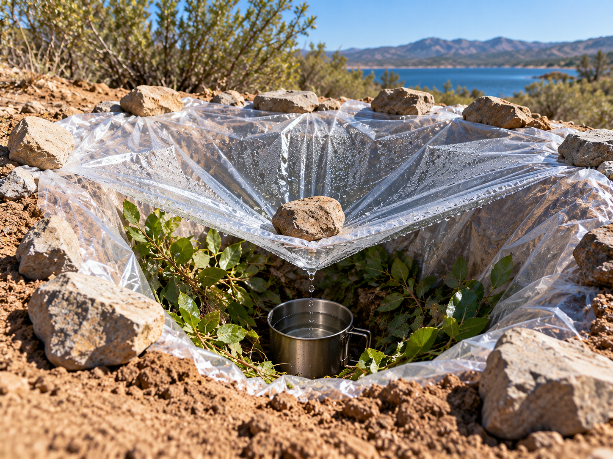

Solar Still

A solar still uses heat, evaporation, and condensation to collect a small amount of water.
What It Is
A solar still is a simple system where heat causes moisture to evaporate. The water vapor then condenses on a surface and can be collected.
When to Use It
It can demonstrate one way that water can move through evaporation and condensation when sunlight is available.
How It Works
Sunlight warms moisture inside a covered area. Water evaporates and reaches the cooler covering. It then condenses into droplets that can move toward a collection container.
Materials Needed
- Clear plastic sheet
- Collection container
- Small weight or stone
- Sunny location
Source
General emergency preparedness information: American Red Cross - Survival Skills